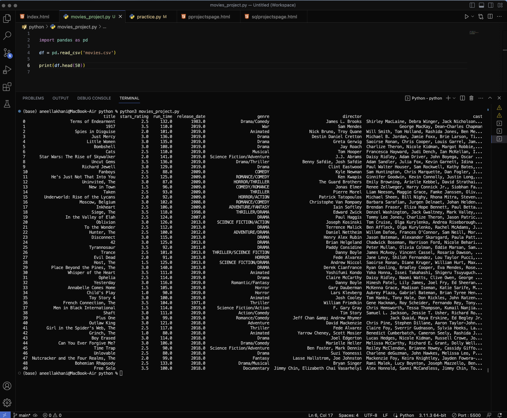
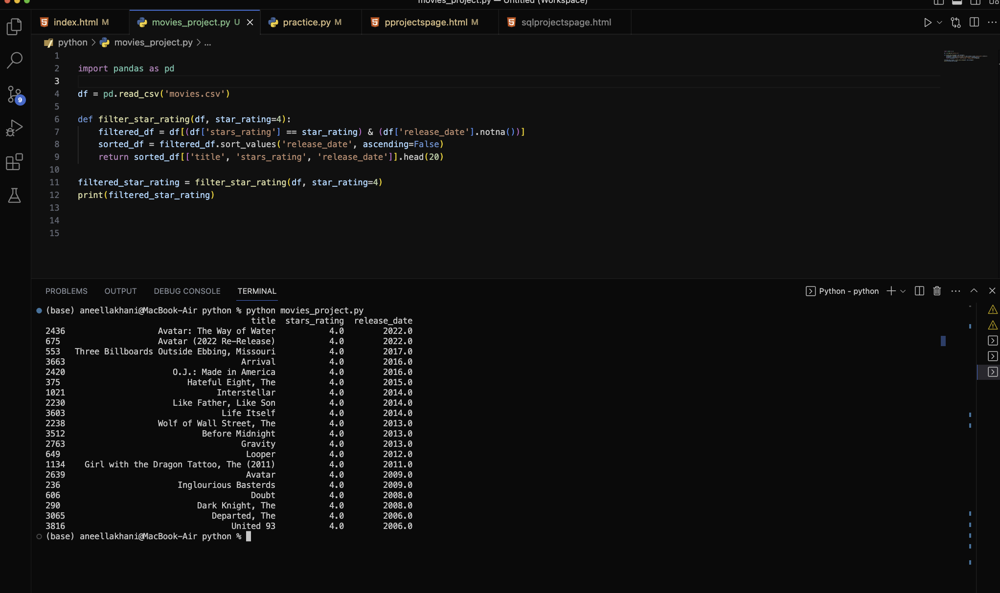
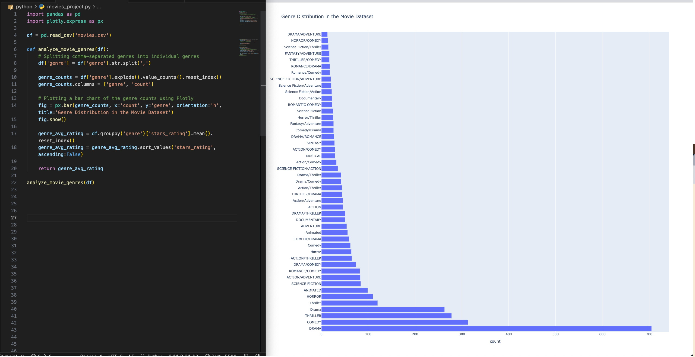
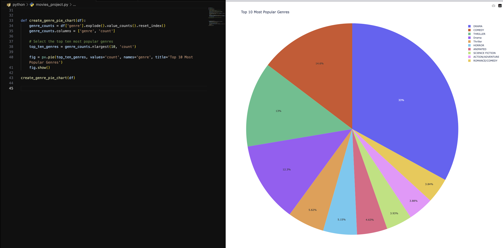
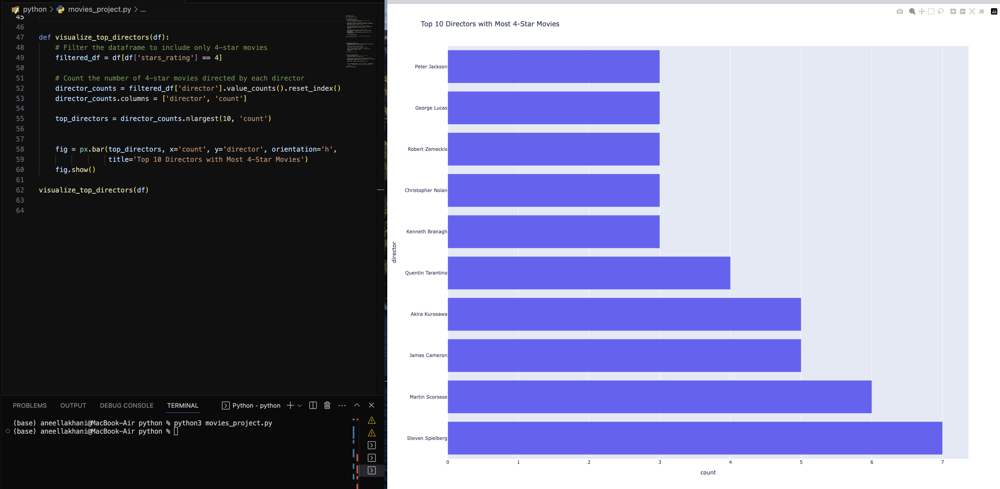
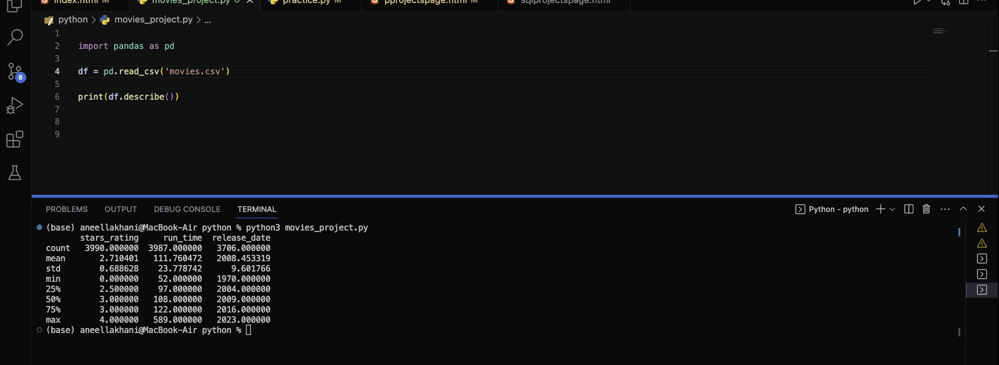

Python Projects Page
Project 1 - Movies Data Analysis
In this project, I utilize python and pandas to analyze a dataset containing movies and information related to the movies. The dataset was sourced from Kaggle, a popular platform for accessing and sharing datasets.
As shown below, I used the Pandas library and loaded the dataset into a DataFrame. I utilized the 'read_csv' function from Pandas, passing the file path 'movies.csv' as an argument. This function reads the file and creates the DataFrame object, which stores the dataset's contents.
This dataset contains information about movies, including columns such as title, stars rating, run time, release date, genre, director, and cast as shown below along with 50 example rows.

By leveraging Pandas, I was able to carry out various types of data analysis.
Below shows a function I created called 'filter_star_rating', which filters the data showing only movies with 4 stars then sorts it by release date as seen in the screenshot below.

The below screenshot shows the bar chart I created using the plotly.express module. It gives a visual representation of the most popular genres.
The code I wrote takes into account the dataset having multiple genres being tied to individual movies, and splits them into individual genres. It also counts the occurrence of each genre, and creates a horizontal bar chart to visualize the genre distribution.

The next screenshot shows how I used the same plotly module to create a pie chart showing the top 10 most popular genres.
I used the 'value_counts' function to obtain the count of each genre in the dataset. I then selected the top ten most popular genres based on their count. With the filtered data, I used 'px.pie' to create the pie chart.

The screenshot below shows the visualize_top_directors function I created to utilize, along with plotly, to visualize the top 10 directors with the most 4-star movies.
I filtered the DataFrame to include only the 4-star rated movies and employed data aggregation techniques to count the number of 4-star movies directed by each filmmaker.

My final analysis utilized the 'describe' function to gather basic but useful statistical information about numerical columns in the dataset as seen in the screenshot below.

By using the the 'describe' function, I can gather useful information, such as the average star rating, which is 2.7. The highest is 4 stars. The average runtime of the movies is 1 hour and 51 minutes, with the longest being about 10 hours long. Also, the release date of the movies range from 1970 to 2023, however most of the movies in this dataset are from 2000 to 2018.
Project 2 - QB Data System
I designed this python program to analyze and compare five NFL quarterbacks stats from the 2022 season. The data used comes from nfl.com/stats/player-stats/.
Below are the screenshots for the code of the program.


The code begins by defining a Quarterback class, serving as a blueprint for creating quarterback objects. Each instance of the class represents a quarterback and is initialized with attributes such as passing yards, touchdowns, completion percentage, interceptions, and regular season wins.
I also implemented a method within the Quarterback class. This allows the program to present a comprehensive view of all the quarterbacks and their respective performance metrics. I then used lambda and also the the max() function, to find quarterbacks with the most touchdowns, passing yards, interceptions, and regular season wins.
To demonstrate data filtering and manipulation, I implemented the use of a function and a for loop to filter quarterbacks based on a completion percentage threshold.
To enhance user experience, I incorporated a menu-driven interface. The menu() function presents a clear menu of options, allowing users to choose from various analysis options. The main program, run_program(), uses a while loop to repeatedly display the menu and process the user's choice. Depending on the user's input, the program calls the corresponding function to perform the requested analysis or exits the program if the user chooses to do so.
The screenshots below provide a look into the program's user functionality. A menu system is displayed for user interaction. The menu provides options to perform various actions, including finding the quarterback with the most touchdowns or passing yards, identifying the quarterback with the most interceptions, or regular season wins.

Selecting option 6, lets the user filter quarterbacks based on a completion percentage threshold.

The program can also display all of the players with thier performance stats in a clear and organized manner.

I designed the code to be scalable and extensible. It allows for easy addition of new quarterbacks or incorporation of additional features.
Project 3 - Guessing Game
This Python program is a game I designed. Below are screenshots of the code and also of the program being played out.

The program offers the user a choice to either win $10 or play the guessing game for a chance to win a larger prize. After choosing to play, The user has 10 attempts to guess a randomly generated number between 1 and 1000.
The program dynamically adjusts the prize money based on the user's progress and provides feedback on each guess, indicating if the guess is too high or too low.

I used python programming concepts such as user input, random number generation, conditional statements, loops, string formatting and functions for the development of this game. Building this game also demonstrates my ability to implement logical decision-making, and provide a responsive user interface.